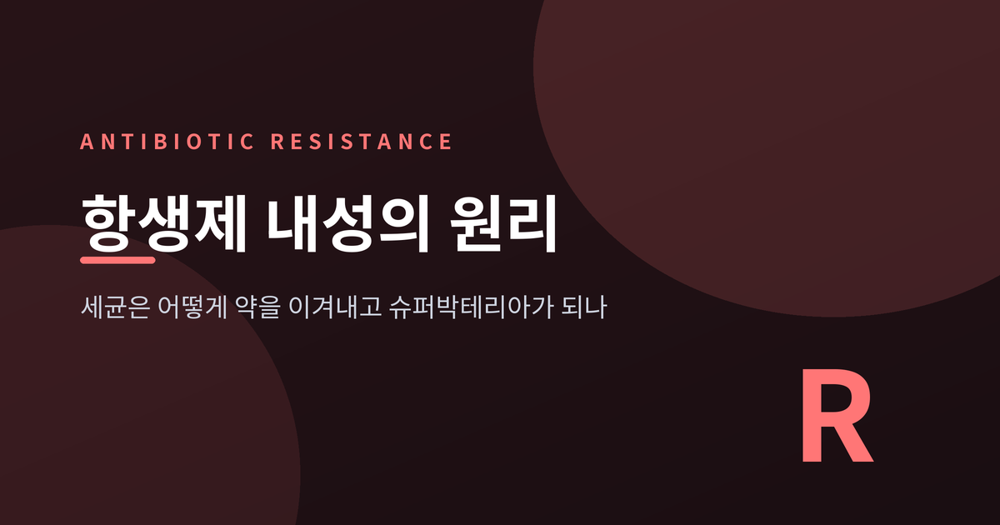
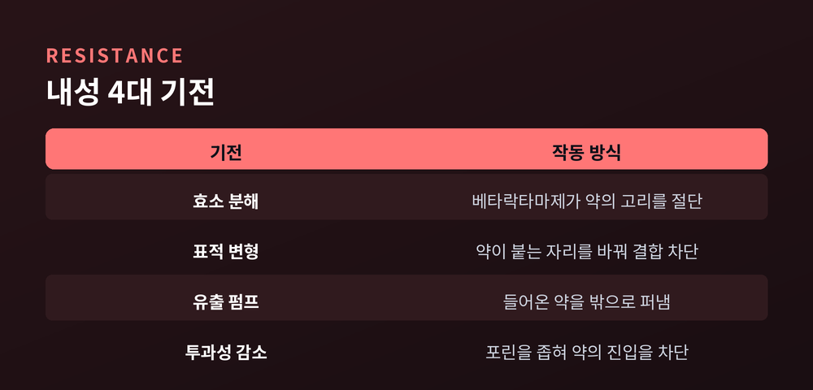

3줄 요약
이번 글에서는 항생제가 세균을 죽이는 원리부터, 세균이 그 약을 이겨내 슈퍼박테리아가 되는 과정까지를 차근차근 정리해 보겠습니다. 매년 수백만 명의 생명이 걸린 문제이지만, 원리 자체는 생각보다 명료합니다.
항생제의 핵심 전략은 하나입니다. "사람 세포에는 없고 세균에만 있는 부분"을 노리는 것입니다.
첫째는 세포벽입니다. 페니실린 계열의 베타락탐 항생제는 세균의 단단한 바깥벽인 펩티도글리칸을 만드는 효소, 즉 페니실린 결합 단백질(PBP)에 달라붙습니다. 벽을 짜는 교차결합이 끊기면 세균은 삼투압을 견디지 못하고 부풀어 터집니다.
둘째는 단백질 공장인 리보솜입니다. 세균의 리보솜은 사람의 것과 구조가 달라, 마크로라이드 같은 약이 세균의 50S 소단위에만 선택적으로 결합해 단백질 생산을 멈춥니다.
셋째는 DNA입니다. 퀴놀론 계열은 DNA를 풀고 복제하는 효소인 DNA 자이레이스와 토포아이소머레이스를 막아 세균이 번식하지 못하게 합니다.
정리하면 이렇습니다. 항생제는 세균의 급소만 골라 때리도록 설계된 정밀 무기입니다.
문제는 세균이 가만히 당하지 않는다는 데 있습니다. 세균이 약을 무력화하는 방식은 크게 네 가지로 나뉩니다.
첫째, 효소로 약을 부숩니다. 대표적인 것이 베타락타마제입니다. 이 효소는 페니실린과 세팔로스포린의 핵심 구조인 베타락탐 고리를 잘라 약을 무용지물로 만듭니다. 더 진화한 형태인 카바페네마제는 최후의 보루로 여겨지던 강력한 항생제까지 분해합니다.
둘째, 표적 자체를 바꿔버립니다. 약이 달라붙어야 할 자리의 모양을 살짝 바꾸면 약은 결합하지 못합니다. 뒤에 나올 MRSA가 바로 이 방식으로 베타락탐 항생제를 피합니다.
셋째, 약을 퍼냅니다. 유출 펌프라 불리는 단백질이 세포 안으로 들어온 약을 계속 밖으로 퍼내, 약이 효과를 낼 만큼 쌓이지 못하게 합니다.
넷째, 문을 좁힙니다. 세포막의 통로인 포린을 변형해 약이 세포 안으로 들어오는 양 자체를 줄입니다.
한 가지 기억할 점은, 세균이 이 방법들을 동시에 여러 개 쓰기도 한다는 사실입니다. 그럴수록 치료는 어려워집니다.

내성이 생기는 길은 두 갈래입니다.
하나는 돌연변이입니다. 세균이 분열하다 우연히 DNA에 변화가 생기고, 그 변화가 내성을 준다면 자손에게 그대로 물려집니다. 이것을 수직 전달이라 부릅니다.
다른 하나가 더 무섭습니다. 수평적 유전자 전달입니다. 내성 유전자가 담긴 DNA 조각이 세균과 세균 사이를 옮겨 다니는 방식인데요. 돌연변이보다 빠를 뿐 아니라, 서로 다른 종 사이에서도 유전자가 건너뛴다는 점이 핵심입니다.
수평 전달에는 세 가지 방식이 있습니다. 두 세균이 몸을 맞대고 플라스미드라는 고리 모양 DNA를 건네는 접합, 죽은 세균이 흘린 DNA를 주워 담는 형질전환, 바이러스가 유전자를 실어 나르는 형질도입입니다. 이 중에서도 대부분의 내성 유전자가 플라스미드에 실려 있어, 접합을 통한 확산이 가장 흔하고 효과적입니다.
여기에 자연선택이 더해집니다. 항생제를 쓰면 약에 약한 세균은 죽고, 우연히 내성을 지닌 소수만 살아남아 번식합니다. 항생제를 많이 쓸수록 이 선택 압력이 강해지고, 내성균은 그만큼 빠르게 우점종이 됩니다.
여러 약에 동시에 내성을 가진 세균을 흔히 슈퍼박테리아라 부릅니다.
가장 유명한 것이 MRSA, 메티실린 내성 황색포도상구균입니다. MRSA는 mecA라는 유전자를 SCCmec이라는 이동성 유전자 카세트 안에 품고 있습니다. 이 유전자가 변형된 PBP를 만들어내 베타락탐 항생제가 결합하지 못하게 하는 것입니다. 이 카세트에는 스스로 다른 균으로 옮겨갈 이동 장치까지 들어 있습니다. 2019년 기준 MRSA는 전 세계에서 내성으로 인한 사망에 가장 많이 기여한 병원체로, 약 12만 1천 명의 사망에 관여했습니다.
다제내성 결핵균도 빼놓을 수 없습니다. 리팜피신에 듣지 않는 결핵균은 치료 기간이 길고 전파력이 높아 세계보건기구가 최우선 관리 대상으로 꼽습니다.
WHO는 2024년 세균 우선순위 목록을 갱신하며, 카바페넴에 내성을 가진 아시네토박터와 장내세균목을 가장 위급한 등급으로 분류했습니다. 이들 그람음성균은 사망률과 전파력이 높은 데다, 마땅한 치료제조차 없다는 점이 가장 큰 문제입니다.
내성이 왜 문제인지는 숫자가 말해 줍니다.
2021년 한 해, 세균 내성과 연관된 사망은 약 471만 명, 내성에 직접 기인한 사망은 약 114만 명으로 추정됩니다. 1990년 이후 매년 최소 100만 명이 항생제 내성으로 목숨을 잃어 왔습니다.
미국만 놓고 봐도 매년 280만 건이 넘는 내성 감염과 3만 5천 명 이상의 사망이 발생합니다. 11초마다 한 명이 감염되고, 15분마다 한 명이 숨지는 셈입니다.
앞날의 전망은 더 무겁습니다. 연구진은 2025년부터 2050년 사이 세균 내성이 3,900만 명의 사망을 일으킬 것으로 예측합니다. 1분에 세 명꼴입니다. 연간 사망자는 2021년 114만 명에서 2050년 191만 명으로 약 70% 늘어날 것으로 봅니다.
다만 희망이 없는 것은 아닙니다. 미국에서는 예방 노력으로 관련 사망이 전체 18%, 병원 안에서는 약 30% 줄었습니다. 관리가 성과를 낸다는 증거이기도 합니다.
원인의 상당 부분은 오남용에 있습니다. 특히 전 세계 항생제의 약 70%가 사람이 아니라 가축에게 쓰인다는 추정이 있습니다. 성장 촉진과 질병 예방을 이유로 건강한 동물에게도 투여되고, 그렇게 생긴 내성균이 식품과 환경을 거쳐 사람에게 전해집니다. 유럽연합은 2006년 성장촉진용 항생제 사용을 금지했고, 그 결과 2011년부터 2022년까지 가축용 항생제 판매가 53% 줄었습니다. 하지만 여전히 최소 35개국은 성장촉진 사용을 허용하고 있습니다.
대응의 한 축은 항생제 스튜어드십입니다. 꼭 필요할 때, 맞는 약을, 맞는 용량과 기간으로만 쓰도록 관리하는 것입니다. 세계보건기구는 2030년까지 내성 관련 사망을 2019년 대비 10% 줄이겠다는 목표를 세웠습니다.
문제는 반대편, 곧 신약 개발이 멈춰 있다는 점입니다. 임상 단계의 항생제는 2023년 97개에서 2025년 90개로 오히려 줄었습니다. 그중 혁신적이라 할 만한 것은 15개, 가장 위급한 병원체에 듣는 것은 단 5개뿐입니다. 시장성이 낮아 민간 투자가 빠져나간 탓입니다.
끝으로 한 마디만 더 드리겠습니다.
항생제 내성은 세균이 특별히 영악해서 생긴 일이 아닙니다. 약을 쓰면 살아남는 놈이 남는다는, 진화의 가장 단순한 법칙이 작동한 결과일 뿐입니다.
"우리가 약을 아껴 쓰는 속도가, 세균이 약을 이겨내는 속도를 따라잡아야 합니다."
그 속도 경쟁에서 우리가 할 수 있는 일은, 필요할 때만 신중히 쓰는 것에서 시작됩니다.